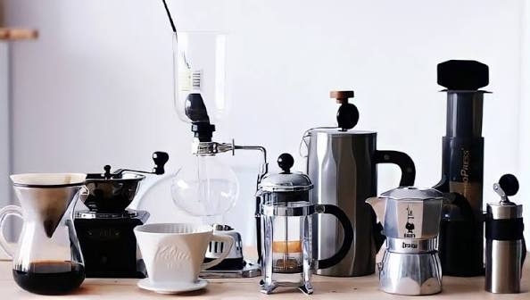

Cà phê muối: vị mặn ngọt gây thương nhớ
Cà phê muối là món cà phê có lớp kem tươi trộn một chút muối phủ phía trên. Vị mặn nhẹ của kem làm dịu độ đắng và làm nổi vị ngọt của cà phê. Món này được cho là bắt nguồn từ Huế, sau đó phổ biến ra nhiều nơi.
Nguyên liệu cho 1 ly
- 40–50ml cà phê pha phin đậm.
- 1–2 thìa sữa đặc.
- 50ml kem tươi, một nhúm muối nhỏ.
- Đá viên.
Cách làm
- Khuấy sữa đặc vào cà phê, đổ lên đá.
- Đánh kem tươi với muối đến khi sánh mịn.
- Phủ kem lên mặt ly và thưởng thức, có thể khuấy nhẹ hoặc uống từng lớp.
Lưu ý: cho muối thật ít, chỉ đủ để cảm nhận vị mặn nhẹ.
← Về trang bài viết
Sinh tố và nước ép: chọn trái cây theo mục đích
Sinh tố giữ cả xơ của trái cây nên no lâu hơn, còn nước ép dễ uống và thanh mát hơn. Dưới đây là gợi ý chọn trái cây theo nhu cầu.
🍊 Tăng đề kháng
Cam, ổi, kiwi giàu vitamin C.
🍉 Giải nhiệt
Dưa hấu, dưa leo, nước dừa giúp bù nước.
🥭 Đẹp da
Cà rốt, xoài, đu đủ chứa beta-carotene.
🍌 Năng lượng
Chuối, bơ kết hợp sữa chua trước khi vận động.
🍍 Dễ tiêu hóa
Thơm, đu đủ, táo chứa enzyme và chất xơ.
🍓 Chống oxy hóa
Dâu, việt quất giàu chất chống oxy hóa.
Nên hạn chế thêm đường và sữa đặc. Nếu có bệnh lý như tiểu đường, hãy hỏi ý kiến bác sĩ trước khi chọn thức uống.
← Về trang bài viết

Pha cà phê tại nhà với dụng cụ đơn giản
Bạn không cần máy móc đắt tiền để có ly cà phê ngon. Hai dụng cụ dễ tìm nhất là phin và bình French press.
Pha bằng phin
- Cho khoảng 20g cà phê xay vừa vào phin, lắc đều và nén nhẹ.
- Rót 30ml nước nóng khoảng 90–95°C, đợi 30 giây cho cà phê nở.
- Rót thêm khoảng 120ml nước và đợi 4–5 phút cho nhỏ giọt.
Pha bằng French press
- Dùng tỉ lệ khoảng 1g cà phê cho 15ml nước, xay thô.
- Đổ nước nóng, đậy nắp và đợi khoảng 4 phút.
- Ấn pit-tông từ từ rồi rót ra ly.
Mẹo để ly cà phê ngon hơn
- Chọn hạt mới rang, xay trước khi pha.
- Dùng nước lọc, không dùng nước sôi hẳn.
- Cân hoặc đong cố định lượng cà phê để lần nào cũng giống nhau.
← Về trang bài viết

Món mới theo mùa: menu mỗi tháng
Mỗi tháng Bean & Bloom ra mắt thức uống mới từ nguyên liệu theo mùa. Dưới đây là ví dụ cách quán giới thiệu menu hằng tháng.
Tháng 10
Latte quế hạt dẻ, hợp tiết trời mát mẻ cuối năm.
Tháng 11
Trà đào cam sả nóng, ấm áp những ngày mưa.
Tháng 12
Cà phê caramel gừng và bánh quy mừng mùa lễ.
Cách quán chọn món mới
- Ưu tiên nguyên liệu tươi theo mùa tại địa phương.
- Thử nghiệm cùng barista và lắng nghe góp ý của khách.
- Món được yêu thích có thể ở lại menu chính.
Hãy theo dõi trang Dịch vụ và trang Liên hệ để cập nhật menu mới mỗi tháng.
← Về trang bài viết